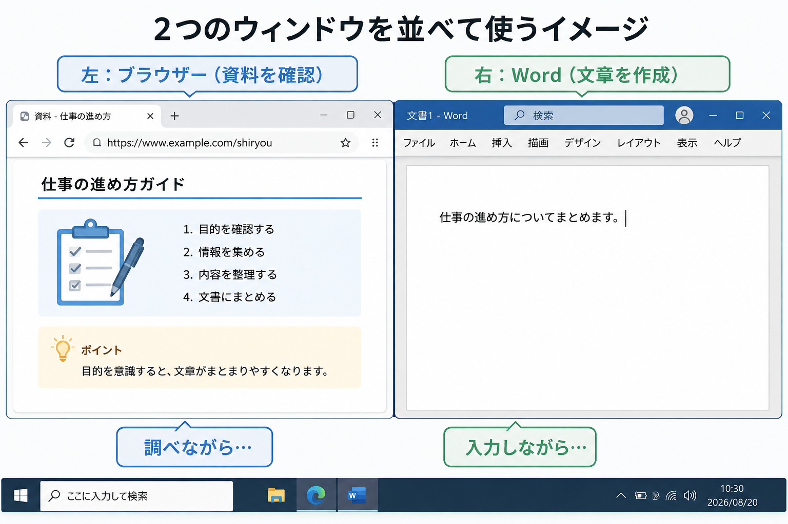

Windowsで画面を並べて作業する方法
2つのウィンドウを同時に使って、仕事をスムーズに進めよう
パソコンで仕事をしていると、「Wordで文章を作りながら、インターネットで資料を確認する」「Excelの数字を見ながら、メールを作成する」といった作業をすることがあります。
そんなとき、毎回アプリを閉じたり、タスクバーから一つずつ切り替えたりしていませんか？ 実はWindowsでは、複数のウィンドウを画面に並べて表示することができます。これは特別な機能ではなく、仕事を効率化するための基本操作です。

▲ 資料を見ながら入力を進める「並列作業」が、パソコン仕事の基本です
「ウィンドウ」って何？
WindowsでWordやExcel、Webブラウザーなどを開くと、画面の中に四角い枠が表示されます。この一つひとつの画面を、ウィンドウと呼びます。例えば、「Wordを開く」というのは、Wordのウィンドウを表示しているということです。
初心者の方に意外と多いのが、「今使っている画面を閉じないと、別の画面は使えない」と思ってしまうことです。実際には、WordもブラウザーもExcelも、すべて同時に「開きっぱなし」にしておくことができます。
2つのウィンドウを左右に並べる（マウス操作）
まずは、最も直感的なマウスを使った方法を覚えましょう。画面の端にウィンドウを「ぶつける」のがコツです。
- 並べたいウィンドウを開く。
- ウィンドウ上部の「タイトルバー（何もない部分）」をマウスでつかむ。
- そのまま画面の「左端」または「右端」までドラッグする。
- 画面の半分に枠が表示されたらマウスを離す。
- 反対側に表示するウィンドウが一覧で出るので、選ぶ。
ショートカットキーならもっと速い！
慣れてきたら、キーボードを使った方法にチャレンジしましょう。これが一番速くて確実です。
Windowsキー ＋ ← または →
現在使っているウィンドウが、一瞬で画面の左半分または右半分に配置されます。片方を配置すると、自動的にもう片方のウィンドウを選ぶ画面が出るため、一瞬で左右分割が完成します。
ウィンドウの「最大化」と「元のサイズ」
ウィンドウを並べる際に迷いやすいのが、右上の3つのボタンです。これらを正しく使い分けましょう。
- 「－」最小化： 画面から消して、タスクバーの中に隠します（アプリは終了しません）。
- 「□」最大化 / 元のサイズに戻す： 画面一杯に広げるか、並べられる大きさにするかを切り替えます。
- 「×」閉じる： そのウィンドウ（アプリ）を完全に終了します。
仕事が楽になる「並び」の組み合わせ
2つの画面を並べると、視線の移動だけで仕事が進みます。代表的な活用例です。
- 左：ブラウザー ＋ 右：Word： ネットの情報を参考に、自分の言葉で文章を作成する。
- 左：Excel ＋ 右：Word： 表の中の数字を確認しながら、正確な案内文や報告書を作る。
- 左：PDF資料 ＋ 右：メール： 添付された資料の中身を見ながら、返信メールを書く。
初心者のうちは「別の画面を見るときは、今の画面を小さくする（最小化）」という操作を繰り返しがちです。しかし、仕事では「必要な画面を並べて置いておく」という発想を持つだけで、思考が途切れず、ミスのない作業ができるようになります。
Windows 11なら「スナップレイアウト」も活用
最新のWindows 11では、ウィンドウ右上の「□（最大化）」ボタンにマウスをそっと重ねるだけで、複数の配置パターン（2分割、3分割、左右非対称など）が表示されます。使いたい場所をクリックするだけでピタッと配置できるので、非常に便利です。
まとめ：まずは「2つ」を並べてみよう
Windowsは1つの画面だけを使い続ける必要はありません。今回覚えた以下の3点を今日から試してみてください。
- ウィンドウは左右に並べて使える
- Windowsキー＋←／→のショートカットが便利
- 「何を見ながら作業するか」を考えて配置を決める
まずは「Wordとブラウザー」の2つを並べることから始めてみましょう。画面を行き来するストレスがなくなり、パソコンを使うのがもっと楽しく、快適になるはずです。